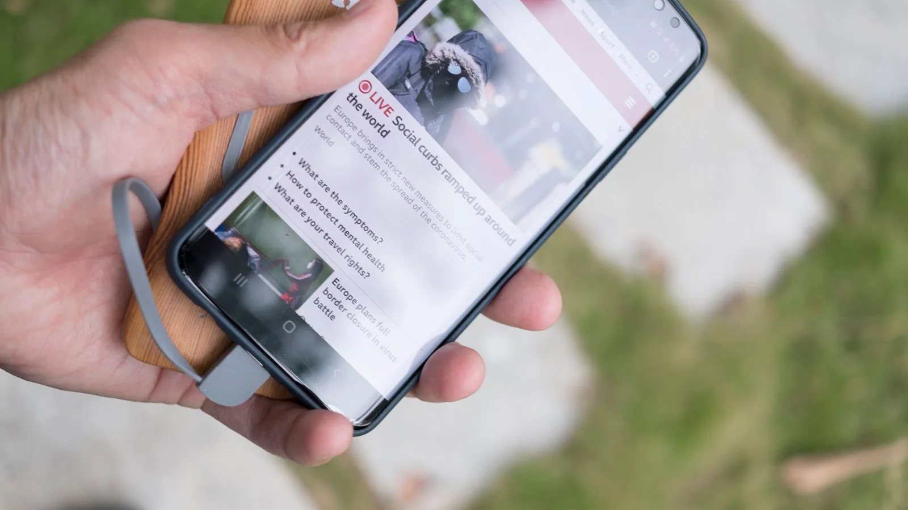

Ինչպես խնայել Android-ի լիցքը՝ կարևոր ծանուցումները չկորցնելով
Սկսեք էկրանից ու լիցքի ծախսի վիճակագրությունից, հետո որոշեք՝ որ ֆոնային աշխատանքն է կարելի սահմանափակել։ Samsung-ի, Xiaomi-ի, Pixel-ի և այլ սարքերի բաժինները տարբեր են։

Գտեք հիմնական սպառողին
Settings-ում փնտրեք Battery usage-ը։ Դիտեք սովորական օրվա ծախսը։ Մի քանի ժամ աշխատած նավիգացիոն հավելվածն ու չօգտագործվող հավելվածի ֆոնային ակտիվությունը նույն կերպ գնահատել պետք չէ։
Նվազեցրեք էկրանի աշխատանքը
- Ընտրեք հարմար պայծառություն, էկրանի անջատման ավելի կարճ սպասում և ավտոմատ պայծառություն, եթե այն հարմար է։
- Եթե կան Always-on Display և բարձր թարմացման հաճախականություն, փորձեք անջատել մշտապես միացված էկրանը կամ նվազեցնել հաճախականությունը։ Գնահատեք՝ լիցքի խնայողությունն արդյոք արժե հարմարավետության կամ սահունության փոփոխությանը։
Օգտագործեք ներկառուցված խնայողության ռեժիմը
Battery Saver-ը կարող է օգնել, երբ պետք է տուն հասնել առանց լիցքավորելու։ Սահմանափակումները կախված են սարքից․ կարող են ազդել ֆոնային աշխատանքի, տեղորոշման և ծանուցումների վրա։ Խիստ ռեժիմին ապավինելուց առաջ ստուգեք կարևոր աշխատանքային հավելվածներն ու մեսենջերները։
Հավելվածները սահմանափակեք ընտրովի
Աջակցվելու դեպքում միացված պահեք Adaptive Battery-ը կամ արտադրողի համարժեք գործառույթը։ Մեծ ծախս ունեցող հավելվածը սահմանափակելուց առաջ ստուգեք դրա ֆոնային աշխատանքի թույլտվությունը։ Բոլոր մեսենջերներից միանգամից հրաժարվել պետք չէ։
Օգտակար սովորություն
Փոխեք մեկ կարգավորում, ապա համեմատեք նման օրերը։ Գրանցեք լիցքավորիչից անջատելու ժամը, էկրանի օգտագործումն ու մնացած լիցքը։ Սարք ընտրելու համար սա ավելի օգտակար է, քան միայն մարտկոցի տարողության թիվը։
Խնայողության կարգավորումները մաշված մարտկոցը չեն վերականգնում։ Լիցքավորման սահմանաչափերը, եթե կան, օգնում են երկարաժամկետ մաշվածությանը, բայց նվազեցնում են այսօրվա լիցքը։ Նկարը հեռախոսի օգտագործման օրինակ է, ոչ թե այս բաժինների էկրանակադր։
Աղբյուրներ՝ Google: Android battery saving · Google: Pixel battery settings · Google: Pixel Battery Saver · Photo: Stanley Ng / Pexels
05.10.2026